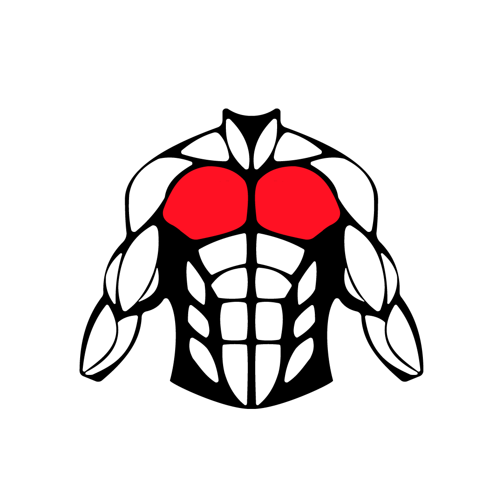
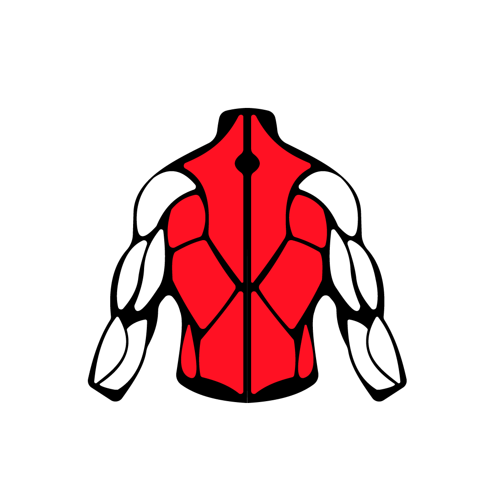
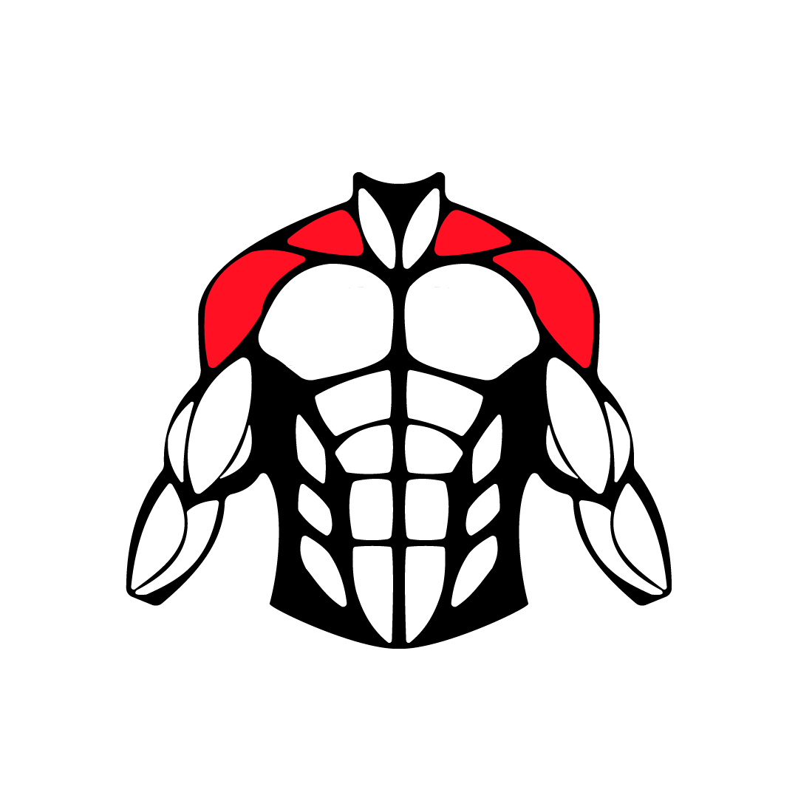
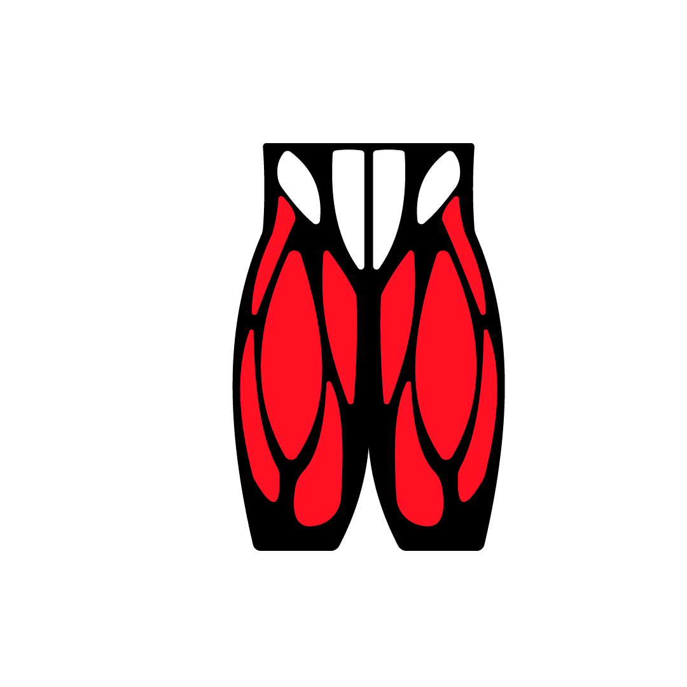

กล้ามเนื้อหน้าอก
กล้ามเนื้อหน้าอก
กล้ามเนื้อหน้าอก หรือ Pectoralis Major เป็นกล้ามเนื้อทรวงอกมัดใหญ่มีรูปร่างคล้ายพัด ทำหน้าที่ หุบแขน หมุนต้นแขนเข้าด้านใน และยังช่วยยกแขน ใช้ในการผลัก ขว้าง ปีนป่าย รั้งแขนให้มาทางด้านหน้า ทำให้ไหล่คงรูปอยู่กับที่
คลิกเลย

กล้ามเนื้อหลัง
กล้ามเนื้อหลัง
1.กล้ามเนื้อหลังส่วนบน ตั้งแต่ต้นคอลงมา รวมถึงแนวของสะบัก
2.กล้ามเนื้อหลังส่วนกลาง ก็จะเชื่อมต่อกับช่วงของสะบัก มาถึงบริเวณใกล้ ๆ เอว
อาจจะสูงกว่าเอวเล็กน้อย ซึ่งตรงนี้จะอยู่บริเวณแนวหลังด้านข้าง หรือบางทีเราอาจจะเคยได้ยินว่า
ปวดปีกด้านหลัง
3.กล้ามเนื้อหลังส่วนล่าง จะอยู่บริเวณตั้งแต่เอว จนถึงประมาณเชิงกราน
คลิกเลย

กล้ามเนื้อหัวไหล่
กล้ามเนื้อหัวไหล่
ไหล่ของคนเรา ประกอบด้วยกระดูก 3 ส่วน ได้แก่ กระดูกไหปลาร้าส่วนปลาย
(Clavicle) กระดูกสะบัก (Scapular) และกระดูกต้นแขน (Humerus)
หัวกระดูกต้นแขนนี้ จะมีลักษณะต่อเข้ากับบริเวณแอ่งของกระดูกสะบัก
โดยจะมีกระดูกไหปลาร้า
ซึ่งเชื่อมต่อกับกระดูกสะบักส่วนบนเป็นหลังคาคุ้มกันให้
จากนั้นเส้นเอ็นจะทำหน้าที่ในการเพิ่มความแข็งแรง ให้กับข้อไหล่ และปกคลุมด้วยกล้ามเนื้อ
เพื่อทำให้แขนสามารถเคลื่อนไหวในทิศทางต่างๆ
คลิกเลย
กล้ามเนื้อแขน
กล้ามเนื้อแขน
กล้ามเนื้อของต้นแขน ที่สำคัญได้แก่ – ไบเซฟส์แบรคิไอ (biceps brachii) เป็นกล้ามเนื้อที่อยู่ด้านหน้าของ ต้นแขน มีรูปคล้ายกระสวย ทำหน้าที่งอข้อศอกและหงายมือ – ไตรเซฟส์แบรคิไอ (triceps brachii)เป็นกล้ามเนื้อมัดใหญ่อยู่ด้าน หลังของต้นแขน ปลายบนแยกออกเป็น 3 หัว ช่วยทำหน้าที่เหยียดปลายแขนหรือข้อศอก
คลิกเลย
